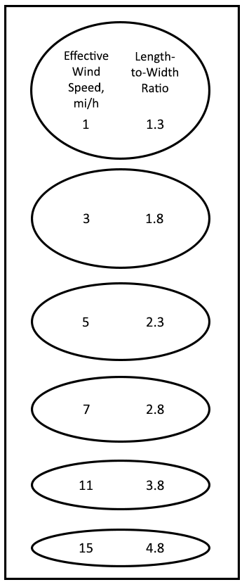

|
Surface Fire Length-to-Width Ratio |
The surface fire length-to-width ratio of an elliptically shaped fire is sometimes called length-to-breadth ratio. The length-to-width ratio of a surface fire is a function of the effective wind speed. Fire burning under higher wind speeds will be long and narrow with a large length-to-width ratio. This variable applies to surface fire. Crown fire length-to-width ratio can be calculated in the CROWN module.
| I/O | Module | If | Notes |
| Input | CONTAIN | If neither SURFACE nor SIZE is selected. | If SURFACE and CONTAIN are both selected, the surface fire length-to-width ratio is calculated in SURFACE and made available to CONTAIN even if SIZE is not selected. |
| Output | SIZE |
|  |